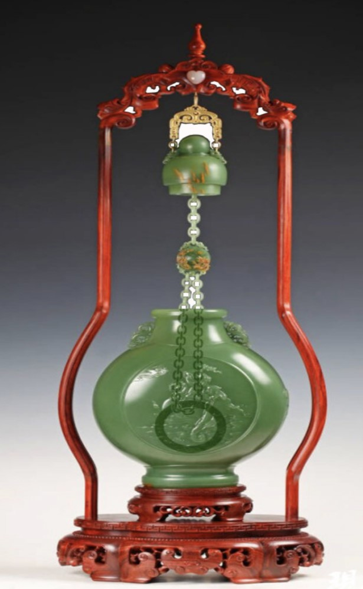

作者：王金高

作品最大限度地运用了原材料，瓶体外形既传承了中国传统器皿的特征，又借鉴了西方一些艺术品的形态。似壶非壶，合上顶盖，疑似壶内盛满玉液琼浆；似瓶非瓶，揭开顶盖，双链引出旭日东升气象；瓶顶端庄秀丽，瓶盖严丝合缝；瓶身既圆亦扁，形态别具一格；瓶底稳健大方，线条刚柔并济；两面雕绘图案，平添几分华美。器皿制作过程中的掏膛术堪称一绝。双活链俱从内膛中掏出，玉材生涩而不透光，故膛内取环需精确计算，并用强光电筒照着施工，稍有不慎，整件作品或毁于一旦。又因作品设计独特，在膛内雕琢并取出双链仅瓶口一个出处，给作业带来更大难度，不得不先行设计制作专用工具，并应用超声波等高科技手段。在双链的末端悬浮雕刻了一只活环，直径为6厘米，而瓶口的内径仅4.8厘米，也就是说这只活环的雕琢须在膛内完成，近乎“盲雕”。可以想象，当打开瓶盖，牵动双链，膛内的玉环也随之摇动，玉件碰撞，发出声响，似远方传来的天籁之音。